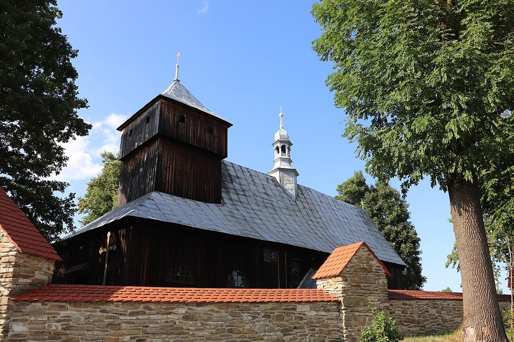

Dobra · 1678 und 1733 · aus der Publikation „Trzy stulecia Jurkowa“ (Drei Jahrhunderte Jurków)
Das Buch beginnt mit einem Brand
Das älteste Kirchenbuch der Pfarrei in Dobra beginnt mit einer Notiz über die abgebrannte Kirche. Ein halbes Jahrhundert später nahm ein Kaplan, der bei Nacht verschwand, die Taufeinträge mehrerer Monate mit.
Mit Hilfe von Claude aus dem polnischen Original übersetzt. Zitate aus den Kirchenbüchern gebe ich im Original wieder, mit Übersetzung.
Auf der ersten Seite des ältesten erhaltenen Kirchenbuchs der Pfarrei Dobra hielt der Pfarrer fest, womit alles beginnt.
Aus dem Taufbuch, 1678
Incipit Liber Metrices post combustionem Ecclesiae
Es beginnt das Matrikenbuch nach dem Brand der Kirche.
Dobra, Taufen 1678–1703 · Sign. 4268/3500 · Scan 002 · Scan ansehen ↗
Die Kirche in Dobra brannte am 2. Juli 1678 ab, am Fest Mariä Heimsuchung, um zwei Uhr nachts. Das Feuer hatten der Schulrektor und der Organist aus Unachtsamkeit verursacht. Es verbrannten die Orgel, die Glocken, die Messgewänder, vier Kelche, die Ziborien, die Monstranz und zwei silberne Kreuze.
Vermutlich verbrannten auch die älteren Bücher. Deshalb beginnt die Geschichte der Familien aus der Pfarrei in den Kirchenbüchern erst im Sommer 1678. Die erste Taufe aus Jurków im neuen Buch trug Pfarrer Marcin Franciszek Dąbrowski am 14. August 1678 ein. Er taufte Ewa, die Tochter von Jan und Anna. Den Namen des Vaters kann man nur unsicher lesen, als Halcarzyk. Vielleicht ist es Chalcarz, eine in Jurków gut bekannte Familie.

Ein halbes Jahrhundert später fehlten im Taufbuch einige Monate des Jahres 1733. Der Pfarrer erklärte, warum.
Aus dem Taufbuch, 1733
Desunt Baptizati notati ab Admodum R[everen]do Andrea Jawernowski pro tunc Vicario Applicato Dobrensi qui deserens Ecclesiam noctu secum tulit
Es fehlen die Getauften, die der hochwürdige Andrzej Jawernowski aufgezeichnet hat, damals Kaplan in Dobra. Als er die Kirche verließ, nahm er die Aufzeichnungen nachts mit.
Dobra, Taufen 1720–1754 · Sign. 4268/3505 · Scan 063 · Scan ansehen ↗
Warum der Kaplan nachts fortging und was er mit den Aufzeichnungen tat, ist nicht bekannt. Diese Taufen wurden nie wiedergefunden. Die im Frühjahr 1733 getauften Kinder wuchsen auf, arbeiteten und gründeten Familien, aber im Taufbuch stehen sie nicht.
Solche Vermerke erklären die Lücken in den Büchern. Wenn im Verzeichnis der Taufen Monate oder Jahre fehlen, dann fehlte das Buch, nicht die Menschen.
Wie sicher ist das
- SicherDie Kirche brannte 1678 ab, und das Buch beginnt nach dem Brand. Das sagt der Vermerk des Pfarrers.
- Noch zu prüfenDer Name des Kaplans und der Familienname Ewas von 1678 sind unsicher gelesen.
Was wir nicht wissen
- Ob irgendein Buch aus der Zeit vor 1678 anderswo erhalten ist, etwa in Abschriften bei der Kurie.
- Warum Kaplan Jawernowski die Pfarrei nachts verließ.
Quellen
- Taufbücher der Pfarrei Dobra, Sign. 4268/3500 (Scan 002) und 4268/3505 (Scan 063), auf der Website Metryki der Polnischen Genealogischen Gesellschaft (PTG).
- „Trzy stulecia Jurkowa“ (Drei Jahrhunderte Jurków; 2026), Kapitel „Osobliwości ksiąg“ (Besonderheiten der Bücher).